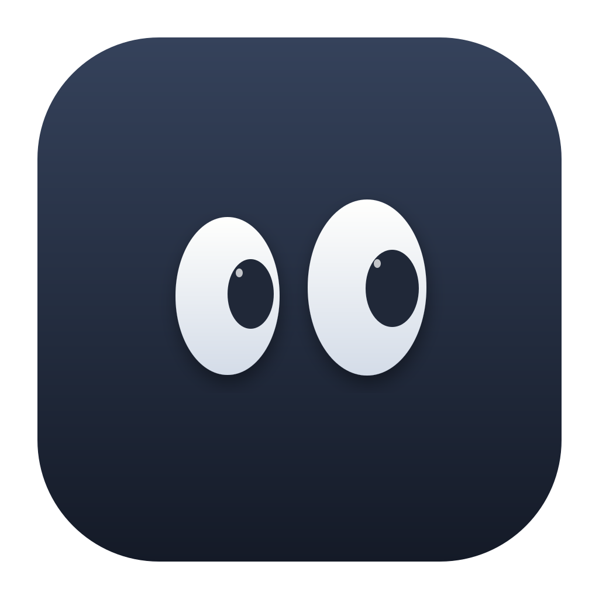

Araneae / DESKTOP COMPANION
Hold ⌘ Command + click to dash to a destination. When cross-display movement is off, clicks, patrol and following stay on the spider’s current display. Commands are ignored while paused or hidden.
Connecting to the companion…